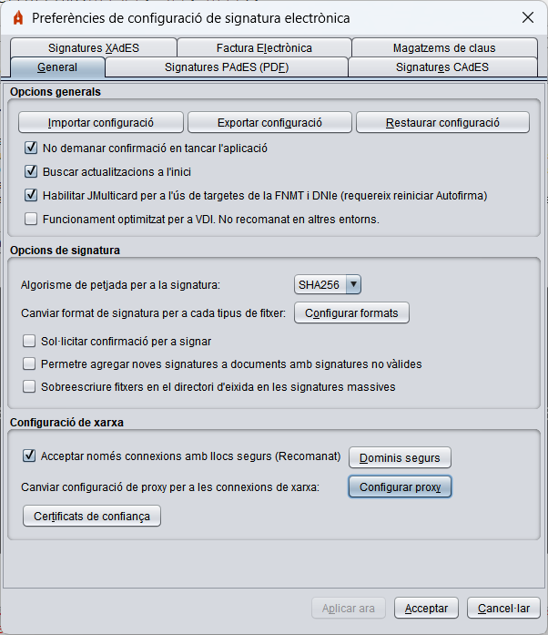

Menú Preferències
Per a configurar les signatures generades per l'eina, accedisca al menú de configuració a través de l'opció "Eines" -> "Preferències" en la barra de menús de l'aplicació. Des d'este menú pot configurar el comportament general de l'aplicació i les signatures generades per a cada tipus de format.
Si polsa en el botó "Cancel·lar" des de qualsevol de les pestanyes del menú, es tancarà est ignorant qualsevol canvi realitzat; si es polsa el botó "Acceptar" es tancarà el menú deixant configurades les opcions definides en el menú i si es polsa el botó "Aplicar ara", s'aplicaran els canvis realitzats sense tancar el menú.
Menú "General"

- Opcions generals:
- Importar configuració general de l'aplicació: Opció per a importar un fitxer de la configuració proporcionat per un administrador.
- Restaurar configuració general de l'aplicació: Opció per a restaurar la configuració per defecte de l'aplicació.
- No demanar confirmació en tancar l'aplicació: Permet eixir de l'aplicació sense confirmació de l'usuari.
- Buscar actualitzacions a l'inici: Permet configurar si es deuen búscar si hi ha actualitzacions disponibles en iniciar l'aplicacion.
- Habilitar JMulticard per a l'ús de les targetes de la FNMT i DNIe: Només en Windows i Linux. Configura si ha d'utilitzar-se el controlador integrat en Autofirma per a l'ús de les targetes de FNMT i DNIe. En cas de desactivar-se, s'utilitzaran els controladors oposats en el sistema. L'ús d'esta funció permet usar les targetes compatibles quan l'usuari no té instal·lat el seu controlador o existeix alguna incompatibilitat amb ell. Esta funció pot ocasionar que se sol·licite a l'usuari múltiples vegades la inserció del PIN de la targeta en processos de signatura massiva. Esta configuració no tindrà efecte fins a la pròxima vegada que s'òbriga l'aplicació.
- Funcionament optimitzat per a VDI: Només en Windows. Configura la comunicació per WebScokets amb el navegador de tal manera que s'evitaran bloquejos quan s'utilitze Autofirma en un entorn VDI. No obstant això, esta configuració ralenteix la comunicació quan la quantitat de dades a transmetre és gran, per la qual cosa no es recomana en altres entorns.
- Opcions de signatura:
- Algorisme de signatura: Algorisme de signatura per defecte que utilitza l'aplicació per a generar les signatures electròniques.
- Formats de signatura: Configura quin format de signatura ha d'aplicar-se quan es proporciona determinat tipus de document. En polsar el botó "Configurar formats" es mostra un diàleg amb els tipus de document per als quals es pot configurar un format de signatura específic:
- Documents PDF
- Documents OOXML de Microsoft Office
- Factures electròniques
- Fitxers XML genèrics
- Fitxers ODF de LibreOffice o OpenOffice
- Resta de fitxers
Qualsevol d'estos tipus de fitxer poden signar-se amb els formats CAdES i XAdES (concordes a la configuració establida en les pestanyes corresponents) i alguns d'ells poden ser signats en formats específics.
El tipus de document "Resta de fitxers" fa referència a qualsevol document que no estiga en qualsevol de les categories anteriors.
ADVERTIMENT: No es recomana que es modifique que les factures electròniques se signen en un format diferent al de factura electrònica.
- Sol·licitar confirmació per a signar: Quan està habilitada esta opció se sol·licita confirmació a l'usuari abans de signar.
- Permetre agregar noves signatures a documents amb signatures no vàlides: En habilitar esta opció, Autofirma no impedirà agregar noves signatures (cosignatura o contrafirma) a documents en els quals es trobe que ja hi ha signatures i estes no siguen vàlides (estiguen corruptes o amb certificats caducats).
- Sobreescriure fitxers en el directori d'eixida: Opció per a configurar si es desitja que, en generar l'estructura de directoris de signatures resultant d'un procés de signatura massiva, i en cas de trobar un fitxer amb el mateix nom amb el qual es guardarà una signatura, se sobreescriga el fitxer preexistent pel nou fitxer de signatura o es guarde la signatura utilitzant un nou nom.
- Configuració de xarxa:
- Acceptar només connexions amb llocs segurs (Recomanat): Si esta opció està activada es comprovarà la confiança del certificat SSL dels llocs web als quals haja de connectar-se l'aplicació. Si es treballa en llocs web amb un certificat SSL no reconegut, és probable que haja de deshabilitar esta opció.
- Dominis segurs: Opció per a configurar una llista de dominis que Autofirma tractarà com a assegurances en connectar a traves de SSL. Per a saber més, consulte la pàgina Configuració de llista blanca de dominis.
- Configurar proxy: Opció per a configurar el proxy per a totes les connexions de xarxa d'Autofirma. Per a saber més, consulte la pàgina Configuració del proxy de xarxa.
- Certificats de confiança: Opció per a configurar certificats de confiança en connexions de xarxa. Per a saber més, consulte la pàgina Certificats de confiança.
Menú "Signatures PAdES (PDF)"
Menú "Signatures CAdES (binàries)"
Menú "Signatures XAdES (XML)"
- Configuració de la política de signatura: Permet declarar la política de signatura que se segueix en les signatures XAdES:
Els valors accessibles a través del panell de configuració són:
- Cap política: La signatures de XML generades no declararan política de signatura.
- Política de signatura de l'AGE 1.9: Es declara la política de signatura de l'AGE v1.9
- Política a mesura: Permet configurar manualment cadascuna de les propietats de la política.
- Identificador de la política.
- Empremta digital de l'identificador de la política.
- Algorisme d'empremta digital de l'identificador de la política.
- Qualificador de la política
- Opcions de signatura:
- Format de les signatures:
- XAdES Enveloping: Es configura la manera enveloping (la signatura embolica a les dades signades).
- XAdES Detached: Es configura la manera detached (signatura i dades en una super-estructura XML).
- XAdES Enveloped: Es configura la manera enveloped (la signatura s'insereix dins de les dades XML).
ADVERTIMENT: La política de signatura de l'AGE, només permet la realització de signatures en formats Enveloped i Internally Detached (ací referida com Detached). Així doncs, només es podran configurar estos formats de signatura quan es declare la política de signatura de l'AGE.
- Metadades de les signatures XAdES:
- Ciutat en la qual es realitza la signatura: Ciutat en la qual es localitza el signant en el moment de la signatura.
- Província en la qual es realitza la signatura: Província en la qual es localitza el signant en el moment de la signatura.
- Codi postal en la qual es realitza la signatura: Codi postal en la qual es localitza el signant en el moment de la signatura.
- País en el qual es realitza la signatura: País la que es localitza el signant en el moment de la signatura.
- Càrrec del signant: Càrrec de qui realitza la signatura.
Menú "Factura Electrònica"
- Configuració de la política de signatura: Permet declarar la versió de la política de signatura de Factura electrònica que ha d'utilitzar-se.
- Opcions de signatura:
- Paper del signant de la factura electrònica: Permet configurar el rol que exerceix el signant en el cicle de vida de la factura.
- Metadades de les factures electròniques:
- Ciutat en la qual es realitza la signatura: Ciutat en la qual es localitza el signant en el moment de la signatura.
- Província en la qual es realitza la signatura: Província en la qual es localitza el signant en el moment de la signatura.
- Codi postal en la qual es realitza la signatura: Codi postal en la qual es localitza el signant en el moment de la signatura.
- País en el qual es realitza la signatura: País la que es localitza el signant en el moment de la signatura.
Menú "Magatzems de claus"
- Magatzem per defecte:
- Permet seleccionar el magatzem de claus que es carregarà per defecte en la interfície d'escriptori.
- Veure contingut: Permet veure els certificats que conté el magatzem seleccionat.
- Usar també en les crides d'Autofirma des del navegador: Indica si es desitja que el magatzem configurat siga el que es carregue per defecte també quan es cride a Autofirma des del navegador.
- Filtres de certificats:
- No mostrar la pantalla inicial de DNIe i treballar sempre amb el magatzem per defecte: Omet la pantalla inicial en detectar un DNIe i s'utilitzarà el magatzem per defecte que estiga configurat.
- Permetre l'ús de certificats caducats: En estar habilitada esta opció, els certificats caducats apareixeran en el diàleg de selecció de certificats de signatura, la qual cosa permetrà signar amb ells.
- Usar sol certificats específics per a signatura en les signatures electròniques (atribut de no repudi): Si està marcada esta opció, només es mostraran els certificats que declaren específicament ser de signatura.
- Usar exclusivament certificats de pseudònim quan estan disponibles: Restringeix que únicament es puguen usar certificats de pseudònim quan estos estiguen disponibles.
- Ometre certificat d'autenticació de DNIe: Oculta el certificat d'autenticació inclòs en els magatzems de claus per a DNIe.
- Targetes intel·ligents:
- Permet donar d'alta targetes intel·ligents a partir del seu controlador PKCS#11 per a poder usar-les directament com un magatzem de claus accessible des del diàleg de seleccín de certificats. Les targetes intel·ligents agregades ací, es podran configurar com a magatzems per defecte en el desplegable del primer apartat.
- Connectar: Realitza una prova de connexió amb el magatzem de claus de la targeta intel·ligent seleccionada.
- Agregar targeta: Afig una nova targeta intel·ligent. S'obrirà un diàleg on introduir un nom per a la targeta intel·ligent i la ruta on es troba el seu controlador PKCS#11.
- Modificar: Permet modificar el nom i la ruta del controlador de la targeta intel·ligent seleccionada.
- Eliminar: Elimina la targeta intel·ligent seleccionada en el desplegable.